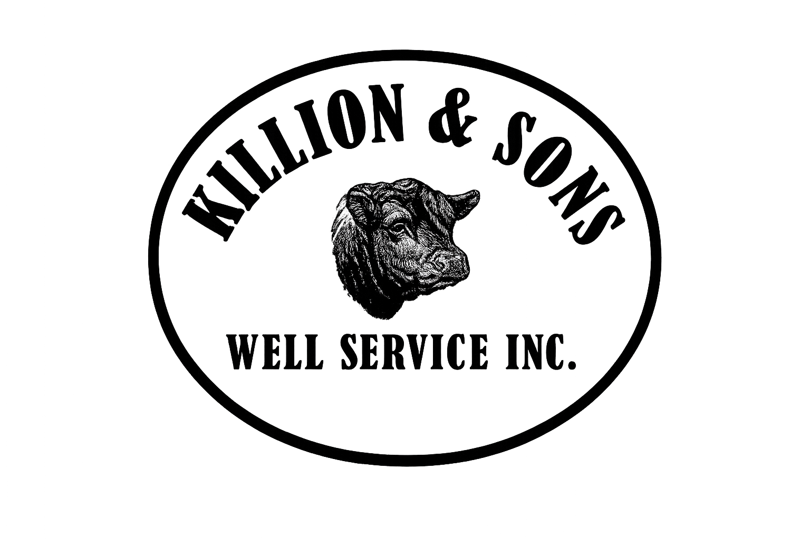

Killion & Sons Employee Portal
The Killion & Sons Employee Portal is a secure internal platform developed for Killion & Sons Well Service Inc. to modernize field and office operations. The system provides employees and supervisors with centralized access to scheduling, inspection reports, incident tracking, training resources, and communication tools.
Built with Expo React Native and powered by Supabase for backend services (PostgreSQL, Auth, and Storage), the portal enables cross-platform access on both Android and iOS while maintaining a unified codebase. Its responsive web-first architecture also allows office staff to manage records from desktop browsers.
My role encompasses full-stack development and system design — from data modeling and authentication flows to interface layouts and theme consistency. The project demonstrates how modern cloud tools can streamline industrial operations while remaining secure and intuitive for employees in the field.
Due to confidentiality and internal use, a public demo is not available; however, this work highlights my ability to design, deploy, and maintain a production-grade business system from the ground up.